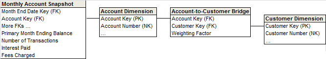

Publicado por Margy Ross en 2014
Archivado en Fundamentos diseño dimensional
Los diseños dimensionales a menudo necesitan adecuar las dimensiones multivalor. Los pacientes pueden tener múltiples diagnósticos. Los estudiantes pueden tener múltiples especialidades. Los consumidores pueden tener múltiples hobbies o intereses. Los clientes comerciales pueden tener múltiples clasificaciones en la industria. Los empleados pueden tener múltiples habilidades o certificaciones. Los productos pueden tener múltiples características opcionales. Las cuentas bancarias pueden tener múltiples clientes. Las dimensiones multivalor son un dilema natural e inevitable en todo tipo de industrias.
Un enfoque común para manejar las dimensiones multivalor es introducir una tabla puente. La siguiente figura muestra una tabla puente para asociar múltiples clientes con una cuenta.

En este caso, la tabla puente contiene una fila para cada cliente asociado a una cuenta. De manera similar, una table puente puede tener una fila para cada habilidad dentro de un grupo de habilidades de clientes. O una fila para cada opción en un grupo de características de producto. Las tablas puente pueden situarse entre tablas de hecho y de dimensiones o, alternativamente, entre una tabla dimensional y sus atributos multivalor (como un cliente y sus hobbies o intereses).
La tabla puente es un modo potente de gestionar dimensiones que contienen valores múltiples cuando se asocia con el granulado de la medición de una tabla de hechos. Es escalable y flexible para manejar un número abierto de valores. Por ejemplo, puedes asociar fácilmente muchos diagnósticos con un paciente hospitalario, y los nuevos diagnósticos son fácilmente situados sin alterar el diseño de la base de datos. Sin embargo, las tablas puente tienen sus desventajas:
Aquí tenemos varias técnicas posibles para evitar las tablas puente. Sin embargo, sed conscientes de que cada una conlleva sus desventajas, también.
Las relaciones “many-to-many” normalmente se resuelven bien en las tablas de hechos. Por ejemplo, si múltiples representantes se asocian con una transacción de ventas, debes poder definir la granularidad de la tabla de hechos para que exista una fila por representante por transacción de venta, y después ponderar la cantidad vendida por columna. Mientras que un granulo más natural sería una fila por transacción de venta, subdividir el granulo podría parecer lógico para los usuarios de negocio en este escenario.
En otras situaciones, esta técnica no tendría sentido. Por ejemplo, si necesitas representar los múltiples hobbies de los clientes, no tendría sentido adoptar un granulo por fila por hobby de cliente por transacción de venta. ¡Eso sería un granulo no natural!
Establecer un diagnostico inicial, un titular de la cuenta principal, una especialidad principal, etc. ya sea con una simple clave foránea en la tabla de hechos (o un atributo simple en la tabla de dimensiones) elimina el problema multi-valor. En este escenario, todas los nombres de las columnas de atributos serán precedidos por la palabra “principal”. Por supuesto, acertar con las reglas del negocio para determinar la relación principal puede ser imposible. Y el subsecuente análisis basado únicamente en la relación principal estará incompleto o erróneo (ya que los restantes valores de la dimensión multivalor serán ignorados).
Por ejemplo, si vendes suministros para mascotas, debes incluir una bandera en la dimensión del cliente para designar a los compradores de perros, compradores de gatos, compradores de aves, etc. No estamos sugiriendo que incluyas 10 columnas etiquetadas genéricamente, como comprador de animales 1, comprador de animales 2, etc.
Este diseño es atractivo porque es fácil de consultar con cualquier herramienta BI con un excelente y predecible rendimiento para la consulta. Sin embargo, sólo es apropiado para un número fijo y limitado de opciones. No deberías incluir 150 columnas diferentes en una dimensión para estudiantes, como por ejemplo en la especialidad de historia, para cada especialidad universitaria posible.
Este enfoque no es muy escalable, ya que los nuevos valores requieren alterar la tabla.
Por ejemplo, si los cursos pueden ser impartidos de forma dual, debes concatenar los nombres de los instructores en un único atributo, como |MRoss|RKimball|. Necesitarías un delimitador como un retroceso o una barra vertical al inicio de la cadena y después de cada valor. Este enfoque permite que el valor concatenado sea fácilmente mostrado en un análisis. Pero existen desventajas obvias:
Las dimensiones multivalor son una realidad para muchos diseñadores. La técnica de la tabla puente y las alternativas discutidas en este "Consejo de diseño" tienen sus más y sus menos. No hay una única estrategia correcta; necesitarás determinar con que compromisos tienes que trabajar. Finalmente, estas técnicas no son mutuamente excluyentes. Por ejemplo, los modelos dimensionales a menudo incluyen una dimensión “primaria” con una única clave foránea en la tabla de hechos, emparejada con una tabla puente para representar las dimensiones multivalor.
Artículo original: Kimball Group

Margy es Presidenta de Kimball Group y ha desarrollado su carrera profesional durante más de 30 años en entornos DSS y Data Warehousing. Es especialista en gestión de proyectos, toma de requerimienots de negocio, y modelado dimensional.